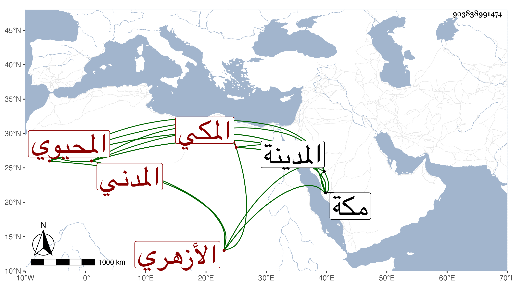

0902Sakhawi.DawLamic.ITO20230111-ara1.EIS1600.903838991474
Biography ID: 903838991474
726
عبد القادر بن عبد الهادي بن محمد المحيوي الأزهري المدني ثم المكي أحد الفضلاء والآتي أبوه : قرأ بمكة في سنة خمس وستين على المحيوي عبد القادر قاضيها المالكي البخاري ولازمه في العربية وغيرها وبرع وبالمدينة النبوية على أبي الفرج المراغي . ومات بمكة في رحب سنة ثمان وسبعين .
